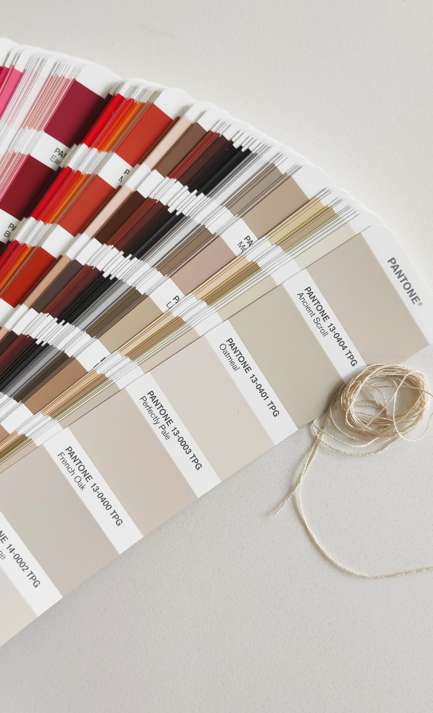
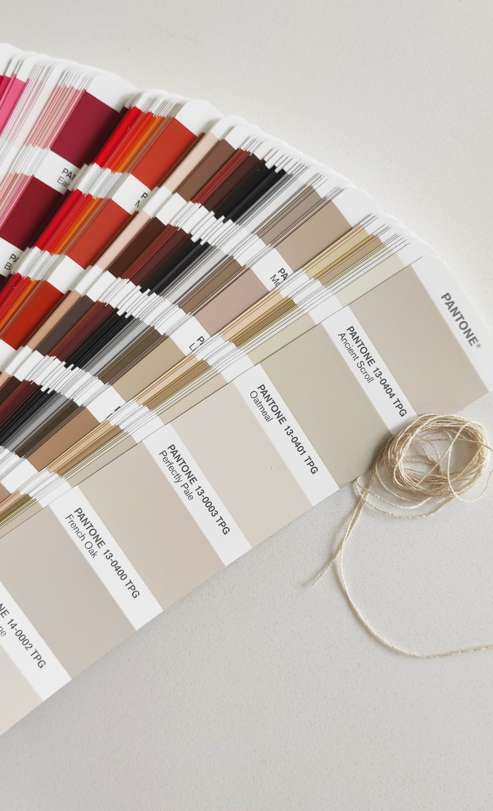

Quem somos
A Fancy Seam é uma agência têxtil focada em estabelecer a ligação entre cliente / fábrica mas também pretende colmatar uma necessidade expressa de poder prestar um serviço externo de controlo de qualidade.


Enquanto comercial têxtil, adquiri, aperfeiçoei e aprofundei vários conhecimentos nomeadamente a nível de:
Além de comercial têxtil, tinha também a função de fazer o controlo de qualidade dos artigos antes dos embarques da produção de modo a detetar antecipadamente problemas de qualidade.
Consideramos este serviço de máxima importância e sim, é um custo adicional; é verdade. Mas facilmente os clientes obtêm o seu retorno quando comparado com uma descoberta tardia de falta de qualidade. Estando a mercadoria já nos vossos armazéns – ou mesmo enviadas para as lojas ou nos clientes finais – fica muito mais complexo e caro para retificar.

 
